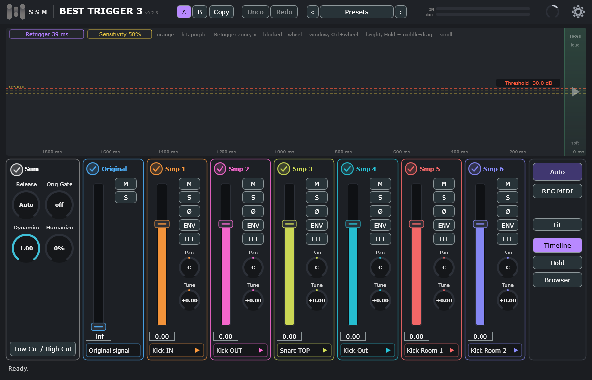

Новичкам: прочитайте разделы 3 и 4, за десять минут вы настроите замену или дополнение барабанных ударов сэмплами. Разделы 6 и 10 объясняют, как довести результат до нужного, а раздел 11 — как поручить рутину автоматике. Названия кнопок и пунктов меню даны так, как они написаны в плагине (по-английски).
1. О плагине
Best Trigger 3 — триггер ударных. Он слушает записанную дорожку барабана (бочку, малый, том), находит каждый удар и в тот же момент запускает ваши сэмплы: вместо оригинального звука или вместе с ним.
- Точное обнаружение ударов по порогу с защитой от повторных срабатываний; фильтры детектора не влияют на звук.
- До шести сэмплов одновременно, у каждого свои громкость, панорама, высота (Tune), огибающая (ASR), фильтры (FLT), Mute/Solo и переворот фазы.
- Мультисэмплы: слои по силе удара и несколько дублей (round robin); свой формат
.bt3. - Осциллограф: вы видите оригинал, каждый сэмпл и их сумму; порог, Retrigger и сдвиг сэмпла (Offset) тянутся мышью.
- Работа с фазой: счётчик Sum gain, автоматическое выравнивание по музыке, слежение за фазой на каждом ударе.
- Меню Auto со Full Auto: подбирает порог, выравнивает фазу и включает слежение за ней.
- A | B, Undo/Redo на 5 шагов, индикаторы входа и выхода, общая громкость.
- Браузер сэмплов с поиском и прослушиванием; миграция библиотек .tci в .bt3.
- MIDI: запись ударов в MIDI-клип и запуск сэмплов нотой.
2. Версии и активация
Есть две версии плагина, они устанавливаются рядом и в DAW называются по-разному.
| Best Trigger 3 Free | Best Trigger 3 (полная) | |
|---|---|---|
| Сэмплы | шесть встроенных мультисэмплов: Kick IN, Kick OUT, Kick SUB, Snare TOP, Snare BOTTOM, Tom | ваши сэмплы, папки, библиотеки .bt3 |
| Браузер, папка библиотеки, миграция .tci | нет | да |
| Всё остальное (осциллограф, Auto, микшер, фильтры, MIDI, A/B, Undo) | одинаково в обеих версиях | |
| Ключ | thankyou (одинаковый для всех) | ваш лицензионный ключ вида XXXXX-XXXXX-XXXXX-XXXXX |
Как активировать
- При первом запуске плагин показывает окно активации. Пока плагин не активирован, он закрыть окно не позволяет и звуков сэмплов нет.
- Введите ключ (в бесплатной версии он уже вписан) и нажмите Activate. Нужен интернет, один раз.
- После активации в правом нижнем углу будет написано Licensed (или Free version (activated)).
Правила лицензии (полная версия)
- Один ключ — один компьютер. Чтобы перенести лицензию, нажмите Deactivate this computer в окне лицензии (кнопка в правом нижнем углу окна) и активируйте тот же ключ на новом компьютере.
- Без интернета плагин работает по сохранённому разрешению (оно действует год). Но при каждом запуске и примерно раз в 12 часов, если есть связь, плагин сверяется с сервером.
- Если лицензия отозвана (например, возврат денег) или перенесена на другой компьютер, плагин теряет её при ближайшей проверке и показывает окно активации.
- Лицензия на Best Trigger 3 действует на все обновления 3.x.
3. Установка
Windows
- Скачайте установщик на странице Releases:
BestTrigger3-Free-…-Setup.exeилиBestTrigger3-…-Setup.exe. - Запустите его. Windows может показать синее окно «Windows защитил ваш компьютер»: установщик не подписан платным сертификатом. Нажмите Подробнее → Выполнить в любом случае.
- Закройте DAW перед установкой и пересканируйте плагины после неё. Плагин ставится в
C:\Program Files\Common Files\VST3. - Вставьте плагин на дорожку барабана как эффект (вставку).
macOS
Версия для Mac поставляется без нотаризации Apple, поэтому система предупредит вас при первом запуске. Это нормально; смотрите инструкцию: как разрешить плагин.
4. Быстрый старт
- Если хотите слышать и оригинал, поднимите уровень Original до 0 дБ. По умолчанию он на −∞ и слышны только сэмплы.
- Положите сэмплы. В бесплатной версии они уже стоят на шести каналах. В полной перетащите файл на плашку внизу канала, нажмите по плашке правой кнопкой или откройте Browser. Левый щелчок по плашке проигрывает сэмпл: чем правее щёлкнуть, тем сильнее удар.
- Запустите воспроизведение в DAW и выберите Auto → Full Auto. Плагин сам настроит порог, выровняет фазу и включит слежение за фазой. Если что-то не так, всё можно настроить вручную: читайте дальше.
Окно быстрого старта с тремя картинками показывается при первом запуске; его можно открыть снова: шестерёнка → Quick start guide….
5. Обзор интерфейса

| Область | Назначение |
|---|---|
| Верхняя панель | Логотип, название и версия. A / B / Copy — сравнение двух настроек (B при первом нажатии становится копией текущей; Copy копирует A→B или B→A). Undo / Redo — отмена и возврат последних 5 изменений (параметры и смена сэмплов). Presets со стрелками «<» «>» — ваши пресеты (ниже). Две тонкие полосы IN (вход) и OUT (выход). Ручка без подписи — общая громкость выхода (−24…+12 дБ). Шестерёнка — настройки; красная точка рядом с ней означает, что вышла новая версия. |
| Осциллограф | Два режима: Hit (последний удар: оригинал, сэмплы, сумма) и Timeline (поток ударов во времени). Справа полоса TEST: левая кнопка мыши запускает тестовый удар, чем выше щёлкнуть, тем он сильнее (разделы 7 и 12). |
| Левая панель «Sum» | Круглая галочка показывает сумму на осциллографе. Ручки Release, Orig Gate, Dynamics, Humanize. Кнопка Low Cut / High Cut открывает фильтры детектора. |
| Каналы | Original и сэмплы Smp 1–6. У каждого: круглая галочка показа кривой, фейдер уровня, кнопки M, S, у сэмплов ещё Ø, ENV, FLT, ручки Pan и Tune и плашка с именем сэмпла. Канал без сэмпла приглушён. |
| Правая панель | Auto, REC MIDI (с зелёной плашкой клипа), Timeline, Hold, Browser (только в полной версии), Fit (только в Timeline). |
| Строка состояния | Сообщения плагина, Undo/Cancel для Auto, справа состояние лицензии. |
Тонкая подстройка: любую ручку и любой фейдер можно двигать в 10 раз точнее, удерживая Shift. Двойной щелчок возвращает значение по умолчанию. Правый щелчок по ручке позволяет ввести число с клавиатуры. Если подержать курсор над элементом, появится подсказка.
Пресеты
Пресет — это все ваши настройки (все параметры и загруженные сэмплы) в одном файле. Кнопка Presets на верхней панели (с названием текущего пресета) открывает меню:
- список ваших пресетов: выбор загружает пресет (стрелки «<» и «>» рядом листают их по порядку);
- Save — сохранить изменения в загруженном пресете; Save as… / Save as a new preset… — сохранить под новым именем (если имя занято, плагин спросит, заменять ли);
- Delete — удалить пресет (текущие настройки не меняются);
- Initialize: default settings — вернуть все параметры к заводским (сэмплы остаются);
- Open the presets folder — показать файлы пресетов (
%APPDATA%\DrumTrigger\Presets, их можно копировать и передавать).
Загрузку пресета, как и любое другое изменение, можно отменить кнопкой Undo. Сэмплы из папки вашей библиотеки сохраняются относительно неё, поэтому пресет работает и после переноса библиотеки. В бесплатной версии пресет хранит параметры, а сэмплы остаются встроенными.
6. Как плагин находит удары
Плагин следит за громкостью дорожки. Когда сигнал поднимается выше порога Threshold, он фиксирует удар, измеряет его силу и запускает сэмплы. После этого детектор «закрывается» и готов поймать следующий удар лишь когда пройдёт время Retrigger и сигнал упадёт достаточно низко (Sensitivity).
Эти параметры настраиваются мышью прямо на осциллографе в режиме Timeline. Двойной щелчок по плашке со значением позволяет вписать число.
| Параметр | Что означает | По умолчанию |
|---|---|---|
| Threshold | Уровень, выше которого сигнал считается ударом (−60…0 дБ). На Timeline — две красные пунктирные линии. | −30 дБ |
| Sensitivity | Насколько быстро детектор снова «взводится» после удара: при 0% — на 80% порога (быстро, ловит дроби, но может сработать дважды на одном ударе), при 100% — на 20% (надёжнее против двойных, но быстрые удары можно пропустить). На Timeline — жёлтые линии re-arm. | 50% |
| Retrigger | «Мёртвое время» после удара (5–250 мс). На Timeline — фиолетовая зона; тяните её правый край. | 40 мс |
| Low Cut / High Cut | Фильтры только для детектора (звук они не меняют): помогают игнорировать гул и шипение. Кнопка слева внизу. Low Cut 20…2000 Гц, High Cut 500…20000 Гц. | 20 / 12 000 Гц |
Сила удара и Dynamics
Сила удара определяется по пику в первые 1,5 мс после превышения порога: от порога (тихо) до 0 дБ (громко). Ручка Dynamics задаёт, насколько удар влияет на звук:
- 1.00 — выбор слоя и громкость следуют силе удара полностью;
- 0 — всегда играет самый сильный слой на полной громкости;
- промежуточные значения дают плавный компромисс.
Режим Timeline
- Включите Timeline и запустите воспроизведение.
- Колесо мыши меняет окно от 0,1 до 10 секунд; Hold замораживает картинку (колесо продолжает масштабировать, средняя кнопка прокручивает).
- Тяните красные линии, чтобы настоящие удары их пересекали, а посторонние звуки оставались внутри.
- Серые/красные «крестики» — звуки, которые плагин пропустил из-за Retrigger. Если ими помечены настоящие удары, уменьшите Retrigger или Sensitivity. Если один удар помечен несколькими оранжевыми линиями, увеличьте.
Fit подгоняет высоту картинки под сигнал, Ctrl+колесо меняет её вручную.
7. Сэмплы и микшер
Как положить сэмпл на канал (полная версия)
- Перетащить файл на плашку нужного канала; файлы, брошенные на окно мимо плашек, занимают первые свободные слоты.
- Правый щелчок по плашке: Load sample or .bt3 file…, Load folder (multisample)…, Save multisample file (.bt3)…, Clear sample.
- Browser: выбрать файл в дереве библиотеки (раздел 9).
- Поддерживаются WAV, AIFF, FLAC (моно или стерео, до 120 секунд), папки с мультисэмплами и файлы .bt3.
На каждом ударе играют все загруженные сэмплы одновременно, каждый со своими настройками, поэтому можно слоить «клик» и «низ» бочки.
В бесплатной версии плашки заняты встроенными сэмплами; по правому щелчку можно Restore the original sample или Clear sample.
Плашка: прослушивание
Левый щелчок по плашке с сэмплом проигрывает только этот сэмпл так, как он зазвучит на ударе: со всеми настройками (уровень, Pan, Tune, ENV, FLT, Offset, Ø, Mute/Solo, Humanize). Сила удара зависит от места щелчка по плашке: левее — тише, правее — сильнее. Мультисэмпл при этом играет соответствующим слоем; одиночные сэмплы (один слой) всегда звучат одинаково. Значок ▶ на плашке подсказывает, что на неё можно нажать. Имя показывается без расширения; полное имя всплывает, если подержать курсор.
Полоса TEST на осциллографе
Справа на осциллографе (в обоих режимах) есть узкая зелёная полоса. На ней не работает ни одно управление, только левая кнопка мыши: она запускает тестовый удар сразу всех сэмплов через весь тракт. Сила удара зависит от высоты щелчка: выше — сильнее, ниже — тише (на мультисэмплах это выбор слоя).
Канал микшера
| Элемент | Описание |
|---|---|
| Круглая галочка | Показывает или скрывает кривую канала на осциллографе. Галочка Original включает оригинал в сумму, даже если его фейдер на −∞. |
| Фейдер | Громкость канала от −∞ до +24 дБ (значение под фейдером с сотыми долями). По умолчанию Original на −∞, а сэмплы на 0 дБ. Тянуть можно за любое место фейдера. |
| M / S | Mute и Solo. Solo оставляет слышимыми только каналы с включённым Solo (Mute при этом игнорируется). |
| Ø | Переворот фазы сэмпла. У Original нет: оригинал — точка отсчёта для фазы. |
| ENV | Огибающая ASR: Attack 0–200 мс; Sustain 0–2000 мс (off = играть сэмпл целиком); Release 1–1000 мс. Кнопка подсвечивается, пока огибающая используется. |
| FLT | Фильтры звука этого сэмпла: Low Cut (20…2000 Гц) и High Cut (1000…20000 Гц), «off» на краях. Подсвечивается, когда фильтр включён. (На осциллографе фильтры пока не отображаются.) |
| Pan | Панорама от L100 до R100, равномощная (в центре громкость не меняется). |
| Tune | Высота в полутонах, −24…+24 (меняется и длина, как при изменении скорости). |
| Плашка | Имя сэмпла, клик — прослушать, правый клик — меню. |
Общие ручки (левая панель)
| Ручка | Описание |
|---|---|
| Release | Когда приходит новый удар, предыдущий звучащий сэмпл того же канала затухает за это время (0–500 мс). 0 — без обрыва. |
| Orig Gate | Гейт оригинала: после каждого удара оригинал остаётся слышимым указанное время (0–500 мс, шаг 0,1 мс; с Shift ещё точнее), затем плавно закрывается. 0 — выключен. Сэмплы не затрагивает. |
| Dynamics | См. раздел 6. |
| Humanize | Против «пулемётного» звучания: на каждом ударе случайные малые отклонения громкости (до ±1,5 дБ), высоты (до ±25 центов) и времени (до ±1 мс). 0–100% масштабирует размах. |
8. Мультисэмплы и файлы .bt3
Мультисэмпл — это инструмент из нескольких файлов: слои по силе удара и несколько дублей (round robin) в каждом. Дубль выбирается случайно (повторы возможны), слой — по силе удара.
Как назвать файлы в папке
Загрузите папку: правый щелчок по плашке → Load folder (multisample)…. Файлы называются по образцу Имя_R1_V0.wav (допустим и порядок Имя_V0_R1.wav):
- R + число — номер дубля (round robin). Нужен для вашего удобства, дубли играют случайно.
- V + число — с какой MIDI-velocity (0–127) начинает играть этот слой. Пример:
_V0,_V50,_V105,_V127означает: от 0 до 49 играет V0, от 50 до 104 — V50, от 105 до 126 — V105, ровно 127 — V127. - Можно указать не точную velocity, а уровни, как в Trigger 2:
_V1, _V2, _V3, _V4(все числа меньше 32). Плагин сам распределит их равномерно по диапазону 0…127 по возрастанию номера: чем больше номер, тем сильнее удар. - Если ни один файл не подходит под такое имя, все файлы папки становятся дублями одного слоя.
Файл .bt3
Мультисэмпл (и даже одиночный сэмпл) можно сохранить в один файл .bt3: правый щелчок по плашке → Save multisample file (.bt3)…. В нём сэмплы сжаты без потерь (FLAC), поэтому он занимает меньше места, и его нельзя вскрыть простым переименованием. Файл целиком загружается в память, диск во время игры не читается.
Как слои связаны с аудио и MIDI
Для звука сила удара берётся из пика сигнала, для MIDI — из velocity ноты; в обоих случаях ручка Dynamics задаёт, насколько она влияет на выбор слоя (раздел 6).
9. Библиотека, браузер и миграция .tci
Только в полной версии.
Папка библиотеки
Шестерёнка → Sample library → Choose sample library folder… задаёт папку, где вы храните сэмплы. По умолчанию это Документы\SSM\Best Trigger 3\Library. Окна выбора файлов открываются в этой папке. Там же: Open library folder и Use the default folder.
Браузер сэмплов
Кнопка Browser в правой панели открывает отдельное окно: дерево папок и файлов библиотеки, строка поиска (по всем словам из имени и пути), кнопка Audition (прослушивание по клику), кнопки Refresh, Migration…, Library folder…, Open in Explorer. Внизу шесть пэдов — по одному на каждый канал сэмплов.
- Один щелчок по файлу проигрывает его (если Audition включён).
- Двойной щелчок или перетаскивание на пэд загружает файл в канал. Пэд выбирается щелчком по нему.
- Правый щелчок по файлу или папке — выбрать пэд и загрузить (папка загружается как мультисэмпл); правый щелчок по пэду очищает канал.
Онлайн-библиотеки
Кнопка Online libraries… в браузере открывает список библиотек сэмплов, которые можно скачать: у каждой видны размер, описание и что внутри. Выберите библиотеку и нажмите Download and install: плагин скачает архив, проверит контрольную сумму и распакует его в папку вашей библиотеки (структура папок сохраняется, ваши файлы не перезаписываются). Затем библиотека видна в дереве браузера. Из архива берутся только звуки, файлы .bt3 и заметки.
Миграция библиотеки .tci
Шестерёнка → Sample library → Migration (или кнопка Migration… в браузере) превращает библиотеку инструментов Trigger Instrument Editor (.tci) в файлы .bt3:
- Плагин показывает предупреждение: конвертировать можно только свободные сэмплы и сэмплы, сделанные вами; вы отвечаете за право на конвертацию. Кнопка Continue становится доступной, когда вы поставите галочку подтверждения.
- Выберите папку с библиотекой
.tci. - Плагин создаёт файлы
.bt3прямо в папке вашей библиотеки, повторяя названия и структуру исходных папок. Обычные звуковые файлы (WAV, AIFF, FLAC), лежащие в той же библиотеке, копируются как есть. - Повторный запуск продолжает работу: уже готовые файлы пропускаются. Подробный отчёт сохраняется в
MIGRATION_LOG.txt.
10. Фаза и выравнивание
Когда сэмпл звучит одновременно с оригиналом, их волны складываются. Если пики совпадают, сумма плотнее; если один «вверх», а другой «вниз» — они гасят друг друга, и звук становится тонким (особенно на низах). Выравнивание фазы — это сдвиг сэмпла по времени и, при необходимости, переворот полярности.
Режим Hit
Когда Timeline выключен, осциллограф показывает последний удар (от 40 мс до удара до 85 мс после). Синяя кривая — оригинал, цветные — сэмплы, белая — сумма (галочка Sum): то, что реально уходит на выход, с учётом уровней, Mute/Solo, Offset, Ø и огибающих. Кривые нарисованы утолщёнными линиями, график сам подгоняет высоту под самую большую кривую.
Offset: сдвиг сэмпла относительно оригинала
У каждого сэмпла свой Offset от −30 до +30 мс (оригинал — точка отсчёта). Плашки Smp 1…6 вверху осциллографа показывают значения.
- Нажмите на плашку нужного сэмпла (она подсветится).
- Тяните график влево и вправо: двигается Offset выбранного сэмпла; с Shift в 10 раз точнее.
- Двойной щелчок по плашке открывает ввод числа, двойной щелчок по графику сбрасывает Offset в 0.
Sum gain
В правом верхнем углу осциллографа — число Sum gain: насколько сумма громче каналов, сложенных без учёта фазы (дБ).
| Цвет и значение | Значение |
|---|---|
| Зелёный, от +1,5 дБ | Волны в фазе, сумма плотнее. Цель. |
| Жёлтый, около 0 дБ | Фазовая связь нейтральна. |
| Красный, ниже −1,5 дБ | Каналы гасят друг друга: сдвиньте сэмпл или нажмите Ø. |
Число считается по первым 40 мс удара (в режиме Bass — по первым 100 мс, только по низам). Если оригинал на −∞, но галочка Original включена, он всё равно учитывается в сумме на экране.
Порядок выравнивания вручную
- Оставьте на экране Original и один сэмпл.
- Если первые волны идут в разные стороны, нажмите Ø.
- Включите Sum и двигайте Offset, пока Sum gain не станет максимальным и зелёным.
- Проверьте на нескольких ударах (тихих и громких); для живых записей включите слежение (раздел 11).
Слежение за фазой
Auto → Track phase on every hit: перед запуском сэмпла плагин смотрит на первые 10–12 мс именно этого удара и подстраивает старт в пределах ±2 мс. Задержка плагина от этого не растёт.
11. Меню Auto
Пока автоматический инструмент слушает музыку, кнопка Auto мигает и на ней показано число услышанных ударов (например, 5/24); ход работы виден и в строке состояния. Результат можно отменить: Undo в строке состояния, пункт Undo the last auto change или Undo на верхней панели.
| Пункт | Что делает |
|---|---|
| Full Auto: threshold, phase | Всё по порядку: 1) 12 секунд слушает транзиенты и ставит Threshold и Retrigger; 2) собирает ~24 удара и подбирает Offset и Ø каждого сэмпла; 3) включает слежение за фазой. Громкости сэмплов не меняются. Весь Full Auto отменяется одним нажатием Undo. |
| Whole signal / Bass | По какой части сигнала считаются анализы фазы и громкости и счётчик Sum gain. Для бочки выбирайте Bass (по умолчанию), для малого и тарелок — Whole signal. |
| Align phase: listen to the music | Слушает воспроизведение, пока не соберёт около 24 ударов (не дольше 40 секунд), и подбирает Offset (±30 мс) и Ø для каждого загруженного сэмпла. Результат и уверенность в процентах пишутся в строке состояния; при низкой уверенности (< 30%) плагин предупреждает. |
| Track phase on every hit | Переключатель слежения за фазой (раздел 10). |
| Match samples to the original | Подбирает уровень каждого сэмпла по громкости оригинала (первые 100 мс: для Whole signal с K-взвешиванием, как в LUFS, для Bass — по низам до 250 Гц). |
| Make samples equally loud | Уравнивает сэмплы между собой: самый громкий остаётся на 0 дБ. Слушать музыку не нужно. |
| Learn Threshold and Retrigger | 12 секунд слушает все транзиенты, разделяет настоящие удары и тихое просачивание, ставит Threshold и Retrigger. Если удары и просачивание неразличимы, плагин скажет об этом: тогда проверьте порог вручную на Timeline. |
| Start playback automatically when learning | Пытается сам запустить воспроизведение DAW. Работает не во всех DAW: формат VST3 обычно не разрешает плагину нажимать Play. |
12. Осциллограф: управление
| Действие | Режим | Результат |
|---|---|---|
| Тянуть красную линию | Timeline | Меняет Threshold. |
| Тянуть жёлтую линию | Timeline | Меняет Sensitivity. |
| Тянуть край фиолетовой зоны | Timeline | Меняет Retrigger. |
| Колесо мыши | Timeline | Окно 0,1…10 с (работает и в Hold). |
| Ctrl + колесо | Timeline | Высота картинки. |
| Средняя кнопка и тянуть | Оба | Прокрутка (в Timeline — вместе с Hold, история до 10 с). |
| Нажать на плашку Smp N | Hit | Выбирает сэмпл для Offset. |
| Тянуть график влево/вправо | Hit | Меняет Offset выбранного сэмпла; с Shift точнее. |
| Двойной щелчок по графику | Hit | Сбрасывает Offset выбранного сэмпла в 0. |
| Колесо мыши | Hit | Масштаб по времени (10…125 мс). |
| Двойной щелчок по плашке со значением | Оба | Ввод числа. |
| Левый щелчок по полосе TEST справа | Оба | Тестовый удар; сила зависит от высоты щелчка. |
Hold замораживает картинку. Smooth (шестерёнка → Scope smoothing…, по умолчанию 50%) сглаживает кривые в режиме Hit, на звук не влияет.
13. MIDI
MIDI-выход
Каждый обнаруженный удар плагин отправляет как MIDI-ноту (по умолчанию 36) с velocity, соответствующей силе удара. Ноту можно выбрать: шестерёнка → MIDI out note (с подписями General MIDI). Так плагин служит «преобразователем аудио в MIDI».
Запись ударов в клип
- Нажмите REC MIDI и запустите воспроизведение.
- Нажмите REC MIDI ещё раз, чтобы остановить запись.
- Рядом появится зелёная плашка drag MIDI clip to DAW: перетащите её на MIDI-дорожку.
Если DAW сообщает позицию и темп, ноты встают на сетку тактов; иначе клип записывается в темпе 120 BPM от первого удара.
MIDI-вход
Чтобы запускать сэмплы MIDI-нотой, выберите шестерёнка → Trigger source → MIDI и ноту в MIDI in note (по умолчанию 36). Детектор звука в этом режиме отключён; velocity ноты определяет силу удара.
14. Настройки (шестерёнка)
| Пункт | Что делает |
|---|---|
| Interface scale | Масштаб окна 70…200%. |
| Scope smoothing… | Сглаживание картинки осциллографа (звук не меняется). |
| Trigger source | Audio (по звуку) или MIDI (по ноте). |
| MIDI in note / MIDI out note | Ноты для входа и выхода. |
| Sample library | Папка библиотеки, открыть её, вернуть папку по умолчанию, Migration (раздел 9). Только в полной версии. |
| Remember last samples | Новый плагин стартует с теми сэмплами, которые были в прошлый раз. Включено по умолчанию. |
| Remember last settings | То же для остальных параметров. Выключено по умолчанию. Проект с сохранённым состоянием всегда важнее запомненного. |
| Help improve Best Trigger | Разрешить отправку статистики использования и отчётов об ошибках (раздел 2). Можно отключить в любой момент. |
| Quick start guide… | Показать окно быстрого старта. |
| Manual / Website / Write to the developer | Открыть руководство, сайт, написать разработчику. |
| Check for updates | Проверить обновления вручную. Плагин проверяет их и сам при каждом запуске; если версия новее, рядом с шестерёнкой горит красная точка, а в этом пункте есть пометка. |
| About Best Trigger 3 | Версия, авторские права, сторонние компоненты. |
| License… / Get the full version | Окно лицензии; в бесплатной версии — ссылка на полную. |
Где хранятся данные. Настройки пользователя лежат в %APPDATA%\DrumTrigger (бесплатная версия: %APPDATA%\DrumTriggerFree): settings.xml, lastState.xml, license.dat. Параметры и сэмплы проекта хранятся внутри проекта DAW.
15. Задержка плагина
Чтобы сэмпл можно было поставить раньше оригинала (отрицательный Offset до −30 мс) и плагин успевал разглядеть удар, оригинал внутри плагина задерживается. Общая задержка около 31,5 мс (30 мс запаса плюс 1,5 мс на измерение силы). Плагин сообщает её DAW, которая компенсирует задержку автоматически.
16. Решение проблем
| Проблема | Что проверить |
|---|---|
| Окно активации не закрывается | Плагин нужно активировать (раздел 2). Нужен интернет. Бесплатная версия: ключ thankyou. |
| «No connection to the licence server» | Проверьте интернет и повторите; для активации связь нужна один раз. |
| «This key is already used on another computer» | Ключ привязан к другому компьютеру: отключите его там (Deactivate this computer) и активируйте здесь. Если старого компьютера нет, напишите продавцу. |
| «Locked: …» / «Missing: …» на плашке | Locked — ваш сэмпл в проекте, пока плагин не активирован (загрузится после активации). Missing — файл не найден на этом компьютере: загрузите заново. |
| Звука сэмплов нет | Активация; загружен ли сэмпл; Mute/Solo; фейдер на −∞; не слишком ли высок Threshold. |
| Слышен только сэмпл, а оригинала нет | Это по умолчанию: фейдер Original на −∞. Поднимите его. |
| Удар срабатывает дважды | Увеличьте Retrigger и/или Sensitivity (на Timeline дубли видны как лишние линии). |
| Быстрые удары пропускаются | Уменьшите Retrigger и/или Sensitivity. |
| Срабатывает на просачивании других барабанов | Поднимите Threshold; сузьте Low/High Cut детектора; запустите Learn Threshold; поставьте перед плагином гейт. |
| Sum gain красный, звук тонкий | Фаза не совпадает: Ø, Offset или Align phase (раздел 10). |
| Learn Threshold / Align phase ничего не находят | Нужно воспроизведение с чёткими ударами; автозапуск работает не во всех DAW. |
| Мультисэмпл играет «наоборот» | В его файлах V1 — самый сильный слой: переименуйте так, чтобы бо́льшее число означало более сильный удар (раздел 8). |
| Плагин не видно в DAW | Пересканируйте плагины; проверьте, что установка прошла в C:\Program Files\Common Files\VST3. |
17. Технические данные
| Параметр | Значение |
|---|---|
| Формат / ОС | VST3, 64 бита; Windows 10/11 |
| Вход / выход | Стерео выход; вход моно или стерео |
| MIDI | Вход (запуск нотой) и выход (ноты на каждый удар) |
| Сэмплы | 6 каналов; WAV, AIFF, FLAC, .bt3; моно/стерео; до 120 с |
| Уровень канала / выход | −∞…+24 дБ / −24…+12 дБ |
| Offset сэмпла / Tune / Pan | −30…+30 мс / −24…+24 полутона / L100…R100 |
| Огибающая ASR | Attack 0–200 мс; Sustain 0–2000 мс (off); Release 1–1000 мс |
| Фильтры сэмпла (FLT) | Low Cut 20–2000 Гц; High Cut 1000–20000 Гц |
| Детектор | Threshold −60…0 дБ; Retrigger 5–250 мс; Sensitivity 0–100%; Low Cut 20–2000 Гц; High Cut 500–20000 Гц |
| Orig Gate | 0 (выкл.) – 500 мс |
| Слежение за фазой | ±2 мс на каждом ударе |
| Задержка | около 31,5 мс (сообщается DAW) |
| Undo | 5 шагов |
18. Юридическая информация
© 2026 SSM. Все права защищены. Best Trigger 3, логотип и название SSM принадлежат правообладателю. Программа предоставляется по лицензии; копирование, распространение, декомпиляция и обход проверки лицензии без разрешения правообладателя запрещены.
Программы третьих сторон
Плагин использует фреймворк JUCE (© Raw Material Software Limited), криптографическую библиотеку TweetNaCl (общественное достояние) и метод чтения файлов .tci из проекта tci2wav (Aidan Scroggins, лицензия MIT). Тексты лицензий: THIRD_PARTY_NOTICES.md.
Товарные знаки
Windows — товарный знак Microsoft Corporation. Остальные названия и знаки принадлежат их владельцам и упомянуты только для указания совместимости.